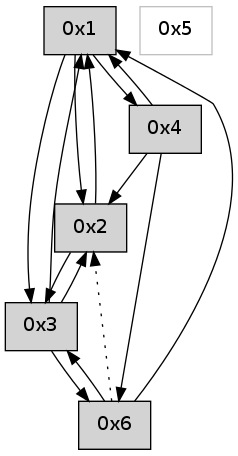

>> << IDX [start] -100 -25 -5 +0 +5 +25 +100 [605.000524998]
 Previous packets
----------------------------------------------------------------------
600.029480 beacon01(adaf) #0 coord=01,02,05,03,04,06 cycle=432.0ms assoc
-- color-indic=0 64 e6 ec
600.039440 beacon02(adaf) #0 coord=01,02,05,03,04,06 cycle=432.0ms assoc 64 b7 13
600.049440 beacon05(adaf) #0 coord=01,02,05,03,04,06 cycle=432.0ms assoc 64 11 39
600.059441 beacon03(adaf) #0 coord=01,02,05,03,04,06 cycle=432.0ms assoc 64 8d 1d
600.069443 beacon04(adaf) #0 coord=01,02,05,03,04,06 cycle=432.0ms assoc 64 2b 37
600.079443 beacon06(adaf) #0 coord=01,02,05,03,04,06 cycle=432.0ms assoc 64 5f 2b
600.091122 [Hello(2): seq=895 sym=4,1,3 sysInfo= stat=4:0,0,0,0/1:15,0,0,0/3:14,0,0,0]
----------------------------------------------------------------------
600.521588 beacon01(adaf) #0 coord=01,02,05,03,04,06 cycle=432.0ms assoc
-- color-indic=0 64 c3 d1
600.531550 beacon02(adaf) #0 coord=01,02,05,03,04,06 cycle=432.0ms assoc 64 92 2e
600.541549 beacon05(adaf) #0 coord=01,02,05,03,04,06 cycle=432.0ms assoc 64 34 04
600.551549 beacon03(adaf) #0 coord=01,02,05,03,04,06 cycle=432.0ms assoc 64 a8 20
600.561549 beacon04(adaf) #0 coord=01,02,05,03,04,06 cycle=432.0ms assoc 64 0e 0a
600.571550 beacon06(adaf) #0 coord=01,02,05,03,04,06 cycle=432.0ms assoc 64 7a 16
600.583214 [Hello(4): seq=401 sym=6,1,2 sysInfo= stat=6:0,0,0,0/1:3,0,0,0/2:1,0,0,0]
600.585345 [Hello(1): seq=300 sym=2,3,4 sysInfo= stat=2:10,0,0,0/3:5,0,0,0/4:5,0,0,0]
----------------------------------------------------------------------
601.013698 beacon01(adaf) #0 coord=01,02,05,03,04,06 cycle=432.0ms assoc
-- color-indic=0 64 07 be
601.023658 beacon02(adaf) #0 coord=01,02,05,03,04,06 cycle=432.0ms assoc 64 56 41
601.033659 beacon05(adaf) #0 coord=01,02,05,03,04,06 cycle=432.0ms assoc 64 f0 6b
601.043660 beacon03(adaf) #0 coord=01,02,05,03,04,06 cycle=432.0ms assoc 64 6c 4f
601.053659 beacon04(adaf) #0 coord=01,02,05,03,04,06 cycle=432.0ms assoc 64 ca 65
601.063659 beacon06(adaf) #0 coord=01,02,05,03,04,06 cycle=432.0ms assoc 64 be 79
601.075340 [Hello(2): seq=896 sym=4,1,3 sysInfo= stat=4:0,0,0,0/1:0,0,0,0/3:15,0,0,0]
----------------------------------------------------------------------
601.505806 beacon01(adaf) #0 coord=01,02,05,03,04,06 cycle=432.0ms assoc
-- color-indic=0 64 4b 0e
601.515767 beacon02(adaf) #0 coord=01,02,05,03,04,06 cycle=432.0ms assoc 64 1a f1
601.525768 beacon05(adaf) #0 coord=01,02,05,03,04,06 cycle=432.0ms assoc 64 bc db
601.535767 beacon03(adaf) #0 coord=01,02,05,03,04,06 cycle=432.0ms assoc 64 20 ff
601.545767 beacon04(adaf) #0 coord=01,02,05,03,04,06 cycle=432.0ms assoc 64 86 d5
601.555768 beacon06(adaf) #0 coord=01,02,05,03,04,06 cycle=432.0ms assoc 64 f2 c9
601.567204 [Hello(1): seq=301 sym=2,3,4 sysInfo= stat=2:11,0,0,0/3:5,0,0,0/4:5,0,0,0]
601.571102 [Hello(4): seq=402 sym=6,1,2 sysInfo= stat=6:0,0,0,0/1:4,0,0,0/2:2,0,0,0]
----------------------------------------------------------------------
601.997914 beacon01(adaf) #0 coord=01,02,05,03,04,06 cycle=432.0ms assoc
-- color-indic=0 64 8f 61
602.007875 beacon02(adaf) #0 coord=01,02,05,03,04,06 cycle=432.0ms assoc 64 de 9e
602.017876 beacon05(adaf) #0 coord=01,02,05,03,04,06 cycle=432.0ms assoc 64 78 b4
602.027875 beacon03(adaf) #0 coord=01,02,05,03,04,06 cycle=432.0ms assoc 64 e4 90
602.037876 beacon04(adaf) #0 coord=01,02,05,03,04,06 cycle=432.0ms assoc 64 42 ba
602.047875 beacon06(adaf) #0 coord=01,02,05,03,04,06 cycle=432.0ms assoc 64 36 a6
602.059550 [Hello(2): seq=897 sym=4,1,3 sysInfo= stat=4:0,0,0,0/1:1,0,0,0/3:15,0,0,0]
----------------------------------------------------------------------
602.490021 beacon01(adaf) #0 coord=01,02,05,03,04,06 cycle=432.0ms assoc
-- color-indic=0 64 c2 66
602.499982 beacon02(adaf) #0 coord=01,02,05,03,04,06 cycle=432.0ms assoc 64 93 99
602.509982 beacon05(adaf) #0 coord=01,02,05,03,04,06 cycle=432.0ms assoc 64 35 b3
602.519983 beacon03(adaf) #0 coord=01,02,05,03,04,06 cycle=432.0ms assoc 64 a9 97
602.529983 beacon04(adaf) #0 coord=01,02,05,03,04,06 cycle=432.0ms assoc 64 0f bd
602.539982 beacon06(adaf) #0 coord=01,02,05,03,04,06 cycle=432.0ms assoc 64 7b a1
602.551662 [Hello(4): seq=403 sym=6,1,2 sysInfo= stat=6:1,0,0,0/1:4,0,0,0/2:2,0,0,0]
602.556037 [Hello(1): seq=302 sym=2,4 sysInfo= stat=2:12,0,0,0/4:6,0,0,0]
----------------------------------------------------------------------
602.982130 beacon01(adaf) #0 coord=01,02,05,03,04,06 cycle=432.0ms assoc
-- color-indic=0 64 06 09
602.992091 beacon02(adaf) #0 coord=01,02,05,03,04,06 cycle=432.0ms assoc 64 57 f6
603.002090 beacon05(adaf) #0 coord=01,02,05,03,04,06 cycle=432.0ms assoc 64 f1 dc
603.012091 beacon03(adaf) #0 coord=01,02,05,03,04,06 cycle=432.0ms assoc 64 6d f8
603.022091 beacon04(adaf) #0 coord=01,02,05,03,04,06 cycle=432.0ms assoc 64 cb d2
603.032092 beacon06(adaf) #0 coord=01,02,05,03,04,06 cycle=432.0ms assoc 64 bf ce
603.043775 [Hello(2): seq=898 sym=1,3 sysInfo= stat=1:2,0,0,0/3:0,0,0,0]
----------------------------------------------------------------------
603.474238 beacon01(adaf) #0 coord=01,02,05,03,04,06 cycle=432.0ms assoc
-- color-indic=0 64 4a b9
603.484199 beacon02(adaf) #0 coord=01,02,05,03,04,06 cycle=432.0ms assoc 64 1b 46
603.494199 beacon05(adaf) #0 coord=01,02,05,03,04,06 cycle=432.0ms assoc 64 bd 6c
603.504199 beacon03(adaf) #0 coord=01,02,05,03,04,06 cycle=432.0ms assoc 64 21 48
603.514199 beacon04(adaf) #0 coord=01,02,05,03,04,06 cycle=432.0ms assoc 64 87 62
603.524200 beacon06(adaf) #0 coord=01,02,05,03,04,06 cycle=432.0ms assoc 64 f3 7e
603.535282 [Hello(1): seq=303 sym=2,4 sysInfo= stat=2:13,0,0,0/4:6,0,0,0]
603.539535 [Hello(4): seq=404 sym=6,1,2 sysInfo= stat=6:1,0,0,0/1:5,0,0,0/2:3,0,0,0]
----------------------------------------------------------------------
603.966345 beacon01(adaf) #0 coord=01,02,05,03,04,06 cycle=432.0ms assoc
-- color-indic=0 64 8e d6
603.976306 beacon02(adaf) #0 coord=01,02,05,03,04,06 cycle=432.0ms assoc 64 df 29
603.986306 beacon05(adaf) #0 coord=01,02,05,03,04,06 cycle=432.0ms assoc 64 79 03
603.996308 beacon03(adaf) #0 coord=01,02,05,03,04,06 cycle=432.0ms assoc 64 e5 27
604.006307 beacon04(adaf) #0 coord=01,02,05,03,04,06 cycle=432.0ms assoc 64 43 0d
604.016307 beacon06(adaf) #0 coord=01,02,05,03,04,06 cycle=432.0ms assoc 64 37 11
604.027952 [Hello(2): seq=899 sym=1,3 sysInfo= stat=1:3,0,0,0/3:1,0,0,0]
----------------------------------------------------------------------
604.458453 beacon01(adaf) #0 coord=01,02,05,03,04,06 cycle=432.0ms assoc
-- color-indic=0 64 d0 b7
604.468414 beacon02(adaf) #0 coord=01,02,05,03,04,06 cycle=432.0ms assoc 64 81 48
604.478414 beacon05(adaf) #0 coord=01,02,05,03,04,06 cycle=432.0ms assoc 64 27 62
604.488415 beacon03(adaf) #0 coord=01,02,05,03,04,06 cycle=432.0ms assoc 64 bb 46
604.498414 beacon04(adaf) #0 coord=01,02,05,03,04,06 cycle=432.0ms assoc 64 1d 6c
604.508415 beacon06(adaf) #0 coord=01,02,05,03,04,06 cycle=432.0ms assoc 64 69 70
604.519815 [Hello(1): seq=304 sym=2,3,4 sysInfo= stat=2:14,0,0,0/3:0,0,0,0/4:6,0,0,0]
604.523749 [Hello(4): seq=405 sym=6,1,2 sysInfo= stat=6:1,0,0,0/1:5,0,0,0/2:4,0,0,0]
----------------------------------------------------------------------
604.950561 beacon01(adaf) #0 coord=01,02,05,03,04,06 cycle=432.0ms assoc
-- color-indic=0 64 14 d8
604.960521 beacon02(adaf) #0 coord=01,02,05,03,04,06 cycle=432.0ms assoc 64 45 27
604.970523 beacon05(adaf) #0 coord=01,02,05,03,04,06 cycle=432.0ms assoc 64 e3 0d
604.980522 beacon03(adaf) #0 coord=01,02,05,03,04,06 cycle=432.0ms assoc 64 7f 29
604.990524 beacon04(adaf) #0 coord=01,02,05,03,04,06 cycle=432.0ms assoc 64 d9 03